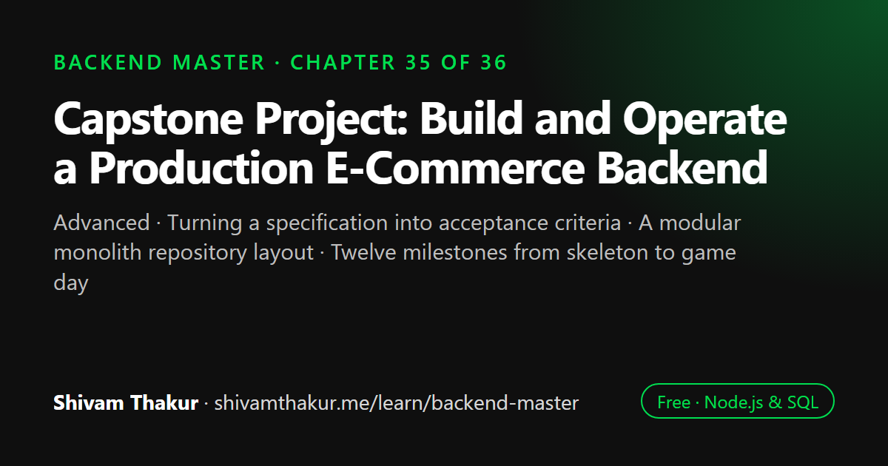

Chapter 35 of 36 · Advanced
Capstone Project: Build and Operate a Production E-Commerce Backend
Capstone — Build and Operate ShopLine

The capstone assembles everything into one production-grade ShopLine backend. It gives the specification and quality bar, a modular monolith architecture, twelve milestones with acceptance criteria and chapter pointers, a testing plan, a 13-point review rubric, runbooks and architecture decision records. It is a plan, not tested code.
In this chapter you will learn
- Turning a specification into acceptance criteria
- A modular monolith repository layout
- Twelve milestones from skeleton to game day
- A testing plan and review rubric
- Runbooks and architecture decision records
35.0 What This Chapter Is
For 34 chapters ShopLine has been a thread running through the lessons: a small e-commerce backend whose pieces you built one at a time. The capstone asks you to assemble the whole thing into one production-grade system, and operate it. It is a guided build plan: a specification, an architecture, milestones with acceptance criteria, a quality bar, a review rubric, and runbooks. It's what a real engineering team would hand to a new hire as "the project."
It is deliberately a project, not a tutorial. You will make decisions, hit problems, and have to decide what "done" means. Everything you need was taught earlier; this chapter tells you where to look (every milestone links to the chapters and, where one exists, to the tested resource files in resources/).
35.1 The Product Specification
ShopLine is a multi-tenant online shop platform. Two audiences: shoppers (browse, cart, checkout, orders) and merchants (manage their shop's catalogue and orders), plus platform admins.
Functional requirements
| Area | Requirements |
|---|---|
| Accounts | Register/login (email+password), sessions, password reset, optional TOTP MFA, roles: customer, merchant (per shop), support, admin |
| Catalogue | Products with categories (tree), attributes (jsonb), images (object storage), price in minor units + currency, tags, active/inactive; merchants manage their own products only |
| Search | Keyword search with typo tolerance (PostgreSQL FTS + trigram) and filters (category, price, tag), keyset pagination |
| Cart & checkout | Server-side cart; checkout creates an order atomically; stock never oversold; price snapshot; idempotent; coupon support (percent/fixed) |
| Payments | Integrate a mock payment provider with idempotency keys, webhooks (signed, idempotent), refunds |
| Orders | Status lifecycle (pending → paid → shipped → delivered / cancelled / refunded), order history, merchant fulfilment actions, audit trail |
| Reviews | One review per user per product, only after delivery; average rating maintained |
| Notifications | Email (simulated) for order events, via the outbox and a queue; user preferences |
| Admin | List users/shops/orders, role changes (audited), feature flags, dead-letter job replay |
| Reports | Daily revenue per shop (SQL window functions), best sellers (Redis sorted set) |
Non-functional requirements (the quality bar)
| Attribute | Target |
|---|---|
| Correctness | No oversell, no double charge, no lost events (tested under concurrency, Chapters 16/24/28) |
| Performance | Product list/detail p99 < 200 ms at 200 req/s on one small instance; checkout p99 < 800 ms; N+1-free (query budgets) |
| Availability | Survives loss of one app instance with 0 errors for idempotent requests; degrades (not fails) when Redis, search or email is down |
| Security | OWASP Top 10 addressed (Chapters 21–23): argon2id, sessions/JWT rules, object-level authorisation, RLS for tenant isolation, rate limits, helmet/CORS/CSRF, secrets management, dependency audit |
| Observability | Structured logs with request/trace ids, RED metrics, traces across HTTP and queue boundaries, /livez /readyz, SLO dashboards and burn-rate alerts (Chapter 25) |
| Operability | One-command local environment; migrations safe and automated; graceful shutdown; documented runbooks |
| Maintainability | Modular boundaries enforced by tests; ≥ 80% coverage on business modules plus mutation testing on pricing and auth; ADRs for key decisions |
Out of scope (decide early, write them down)
Real payment processing (use a mock gateway), multi-region, mobile apps/UI beyond a minimal demo client, ML recommendations, tax/shipping rate engines.
35.2 Architecture
A modular monolith with a separate worker process, built from Chapters 11, 28, 31 and 33:
┌──────────── CDN (static, cacheable GETs; Ch 27) ───────────┐
clients ─► nginx/LB ─►│ api (Express 5, stateless, N instances; Ch 29) │─► PostgreSQL (primary; PgBouncer optional; schema-per-module)
│ modules: identity · catalog · search · cart · orders · │─► Redis (sessions, cache, rate limits, leaderboard, queues)
│ payments · inventory · reviews · notifications · │─► Object storage (product images; presigned URLs)
│ admin · reports │
└────────────────────────┬────────────────────────────────────┘
│ outbox rows (same tx as business writes)
worker (same codebase, different entrypoint; Ch 28) ◄── BullMQ / PG queue
· outbox relay · notifications · payment webhooks retry · reservation expiry · reports · search index syncRepository layout
shopline/
src/
server.js composition root: wire config, pool, redis, modules, http
worker.js same container image, `node dist/worker.js`
config.js validated environment (Zod); fails fast
shared/ errors, money, clock, ids, logger, als (request context), resilience.js (Ch 26)
http/ app.js, middleware (auth, rate limit, request id, error handler), openapi
modules/
identity/ catalog/ search/ cart/ orders/ inventory/ payments/ reviews/ notifications/ admin/ reports/
api.js the ONLY file other modules may import
service.js business rules (take an `actor` and a unit-of-work)
repo.pg.js SQL (the only place SQL lives)
repo.memory.js fake for unit tests (+ contract tests, Ch 24)
routes.js HTTP mapping + Zod schemas
events.js event names and payload schemas
db/migrations/ numbered .sql files (Ch 14 runner), expand/contract discipline
test/ unit · contract · integration · api · security · load
ops/ Dockerfile, compose.yaml, nginx.conf, k8s/ or terraform/, runbooks/, dashboards/
docs/ ARCHITECTURE.md, ADRs, API (OpenAPI), SLOs
.github/workflows/ ci.yml, deploy.ymlBoundary rules, enforced by an architecture test that fails CI on violations: modules import each other only via api.js; no module reads another module's tables (separate PostgreSQL schemas and DB roles); the dependency graph is acyclic; SQL appears only in repo.pg.js; no process.env outside config.js.
35.3 Data Model (Starting Point)
Start from the tested schema: shopline-schema.sql (Chapter 13) and the v2 migration shopline-v2-migration.sql (Chapter 14: updated_at triggers, soft-delete with partial unique index, tags, addresses, order address snapshot, payments, FK indexes). Extend it with:
| Addition | Notes |
|---|---|
shops, shop_members(role) |
Multi-tenancy; every merchant-owned table gets shop_id; RLS policies (Chapter 22) with a non-owner app role |
carts, cart_items |
Server-side; expire after N days |
inventory(sku, available, reserved) |
Atomic conditional updates (Chapter 16); reservations with expiry |
coupons, order_coupons |
Percent/fixed; usage limits enforced with constraints/atomic updates |
payments(provider_ref UNIQUE, status, idempotency_key UNIQUE) |
Reconciliation job compares with the provider |
outbox, processed_events |
Chapter 28; consumers dedupe by event id |
jobs (if using the PG queue) |
pgqueue.mjs from Chapter 28 |
audit_log |
Who changed roles/prices/refunds (trigger or service-level), partitioned by month (Chapter 20) |
reviews |
UNIQUE(product_id, user_id); rating maintained by trigger or event |
| Search | tsvector generated column + GIN, pg_trgm index (Chapters 15/20) |
Index every FK; keep money as integer minor units + currency; timestamptz everywhere; CHECK constraints for states and non-negative values; migrations tested on an empty DB and on a production-size copy.
35.4 The Milestones
Work through them in order. Each has acceptance criteria (a checklist you can demonstrate) and pointers to the chapters and tested files that contain the techniques. Treat "demonstrate" literally: a failing-then-passing test, a measured number, or a screenshot of a dashboard.
M0: Project skeleton and environment (Chapters 4, 5, 6, 7, 31)
- Repo layout above; Node 22 ESM; Express 5;
config.jsvalidating env with Zod;/livezand/readyz. - Dockerfile (multi-stage, non-root,
tini) andcompose.yaml(api, worker, postgres, redis). - Acceptance:
docker compose upgives a working/readyz; killing Postgres flips readiness to 503 while liveness stays 200;docker stopdrains gracefully.
M1: Database, migrations and the core schema (Chapters 12–15)
- Migration runner (ch14-migrate.mjs): transactional, advisory-locked, checksummed;
-- no-transactionsupport. - Core schema + seed from the two SQL resources; FK indexes; constraints.
- Acceptance: all migrations apply to an empty DB in CI; editing an applied migration fails;
EXPLAINevidence (buffers, no seq scan) for the five hottest queries; alock_timeoutis set for all migrations.
M2: Identity: authentication (Chapter 21)
- Reuse the tested module auth-app.mjs: argon2id with rehash, sessions in Redis, rate-limited login, uniform responses, password reset (hashed single-use tokens), optional TOTP (totp-pkce.mjs).
- Acceptance: attack tests pass: no enumeration (identical bodies, ~equal timing), brute-force limiter (429 after 5), session fixation impossible, TOTP RFC vectors.
M3: Authorisation and tenancy (Chapter 22)
can(actor, action, resource)policy; ownership in queries; allow-listed input schemas (Zod.strict()); RLS on tenant tables with a non-owner role;set_config(..., true)per transaction.- Acceptance: a user × endpoint × expected-status matrix (200/403/404) in CI; cross-tenant access impossible even with a forgotten
WHERE(proved by test); mass-assignment attempts rejected.
M4: Catalogue, search and caching (Chapters 13, 15, 20, 27)
- Product CRUD (merchant-scoped), categories (recursive CTE), images via presigned URLs, FTS + trigram search with keyset pagination.
- HTTP caching (
Cache-Control, ETag, SWR) on public GETs; Redis cache-aside with versioned keys, negative caching, single-flight. - Acceptance: search p99 under target with an index (show
EXPLAIN ANALYZE); the stale-write race test passes with versioned keys; cache hit ratio reported; personalised endpoints areprivate, no-store.
M5: Cart, inventory and checkout (Chapters 16, 24, 28)
- Atomic stock decrement; checkout as a unit of work (reuse/adapt ch16-checkout.mjs): item ordering for deadlock freedom, idempotency key, price snapshot, coupon rules, outbox row.
- Acceptance: 50 concurrent buyers on 10 units → exactly 10 orders (oversell lab as a regression test); failed multi-item order restores stock (transaction); same idempotency key replays the original order; property-based tests on
orderTotal(no negative totals).
M6: Payments and webhooks (Chapters 10, 26, 30)
- Mock provider with controllable failure modes (503, slow, charge-then-timeout); idempotency keys; signed webhook endpoint (verify signature, idempotent, respond fast, process async).
- Saga for checkout (reserve → pay → confirm) with compensations; reservation expiry job.
- Acceptance: chaos test mirroring lab3.mjs: under 30% provider faults and an inventory outage, charges == completed orders, none duplicated; reconciliation job finds and fixes injected mismatches.
M7: Async processing and notifications (Chapter 28)
- Outbox → relay → queue → idempotent consumers; notification service with preferences and per-provider rate limits; dead-letter state and replay in the admin API.
- Acceptance: killing the relay/worker mid-run loses no event and sends no duplicate effect (processed-events table); poison job reaches
deadwith an alert; queue-age metric exported.
M8: Reliability and performance (Chapters 25, 26, 29)
- Timeouts on every outbound call; breaker + bulkhead around payments/search/email; graceful degradation (cached recommendations/best sellers); connection budget (
instances × pool) and PgBouncer if needed. - Load tests (autocannon/k6): p50/p95/p99, error rate, hot-row behaviour; compare 1 vs 3 instances behind nginx.
- Acceptance: killing one instance causes zero errors for idempotent requests; Redis outage degrades features but checkout still works (with stricter rate limits); throughput scales ~linearly to the core count; N+1 query-budget tests green.
M9: Observability (Chapter 25)
- pino with redaction + canary-secret test;
AsyncLocalStoragerequest/trace ids propagated into jobs; RED metrics with route templates; OpenTelemetry traces across API → queue → worker; SLO dashboards and burn-rate alerts; error budget policy. - Acceptance: from a single
x-request-idyou can find the API logs, the job logs and the trace; a deliberately injected slow query appears in the dashboard and the alert fires; no secret appears in logs (canary test).
M10: Security hardening (Chapter 23)
- helmet/CSP/HSTS, strict CORS allow-list, CSRF for cookie flows, SSRF-safe fetch (if any URL import), upload validation, rate limits per IP and account,
npm audit+ Trivy in CI, secrets via env/secret manager, dependency pinning. - Acceptance: the attack suite from Chapters 21–23 (BOLA, mass assignment,
alg:none, SSRF, traversal, ReDoS, prototype pollution) is part of CI and green; threat model (STRIDE) document written.
M11: CI/CD and deployment (Chapters 31, 32)
- GitHub Actions: lint/types → unit+contract+integration (Postgres/Redis services) → migrations on empty DB → audit → build image (SHA tag) → scan → publish; staging deploy with smoke tests; production with approval, canary or rolling with zero downtime; rollback by previous digest.
- Acceptance: a bad commit is blocked by CI; a deploy under load drops no requests; rollback demonstrated in < 5 minutes; migrations follow expand/contract with a three-release example.
M12: Operate it (Chapters 25, 26, 30, 32)
- Runbooks (§35.7); a game day where you kill an instance, stop Redis, delay Postgres, flood the queue and replay a duplicate webhook; a post-mortem for the first thing that went wrong.
- Acceptance: each injected failure has a documented expected behaviour, the observed behaviour, and an action item; backups restored successfully in a drill (record RTO/RPO).
35.5 Testing Plan (Chapter 24)
| Layer | What | Tools |
|---|---|---|
| Unit | Pure logic: pricing, policies, state machines, validators; table-driven + property-based (fast-check) | node:test |
| Contract | One suite per repository interface run against memory and PostgreSQL | node:test + real DB, transaction rollback / schema-per-file |
| Integration/API | Routes with real Postgres/Redis; auth, authorisation matrix, idempotency, error shapes | fetch against listen(0) |
| Concurrency | Oversell, double-submit, concurrent refresh tokens, queue claim races | Promise.all harnesses |
| Security | The attack catalogue from Chapters 21–23 | node:test |
| Resilience/chaos | Fault-injected dependencies; breaker/bulkhead behaviour; no duplicate charges | Resilience toolkit (resilience.mjs) + Toxiproxy |
| Performance | Load tests with percentiles + correctness invariants; query budgets | autocannon/k6 |
| Mutation | Critical modules (pricing, auth, policy, outbox) |
Stryker (or the tiny mutator, mutate.mjs) |
Rules: no test depends on another; no real clocks/sleeps (inject a clock, fake timers); flaky tests are quarantined within a day; coverage is a map, mutation score is the quality signal.
35.6 The Review Rubric
Grade your own capstone (or have a peer do it). Each row 0–3 (0 = missing, 1 = partial, 2 = good, 3 = excellent and demonstrated):
| # | Criterion | Evidence expected |
|---|---|---|
| 1 | Correctness under concurrency | Oversell/idempotency/duplicate-delivery tests |
| 2 | Data model quality | Constraints, indexes (EXPLAIN evidence), migrations discipline |
| 3 | Authentication | Attack tests, hashing choice, session/token handling |
| 4 | Authorisation & tenancy | Matrix tests, RLS proof, no BOLA |
| 5 | API design | Consistent errors (problem+json), pagination, versioning, OpenAPI |
| 6 | Caching & performance | Measured wins, invalidation strategy, hot-key handling |
| 7 | Async & reliability | Outbox, idempotent consumers, DLQ, backpressure |
| 8 | Resilience | Timeouts, breakers, bulkheads, degradation demonstrated |
| 9 | Observability | Correlated logs/metrics/traces, SLOs, alerts, redaction |
| 10 | Security hardening | Headers, SSRF/CSRF/CORS, dependency/image scanning, secrets handling |
| 11 | Testing | Pyramid balance, property/contract/mutation tests, speed |
| 12 | Delivery & ops | CI/CD, zero-downtime deploy, rollback, runbooks, game-day report |
| 13 | Architecture & docs | Enforced boundaries, ADRs, clear README, honest trade-offs |
Scoring: 0–13 beginner prototype · 14–26 solid junior-to-mid project · 27–33 strong, production-minded · 34–39 excellent. More important than the score: can you explain each decision, show the evidence, and say what you'd change at 10×?
35.7 Runbooks to Write
Each runbook: symptoms → quick checks → mitigation → root-cause steps → who to page → prevention.
- High error rate after a deploy: check deploy marker, canary metrics; roll back by previous digest; flip flags.
- Latency spike: RED dashboard → trace the slow hop → DB (
pg_stat_statements, locks:pg_blocking_pids), cache hit ratio, event-loop lag, GC/memory. - Database connections exhausted:
pg_stat_activity, idle-in-transaction, pool sizes, PgBouncer; kill leaked sessions; fix the leak. - Redis down/evicting: degraded mode behaviour, memory/eviction policy, failover, rebuild caches without stampede.
- Queue backlog / dead jobs: oldest-job age, worker health, poison messages, replay procedure, idempotency check before replay.
- Payment provider outage: breaker state, pending-order handling, customer messaging, reconciliation after recovery.
- Suspected data inconsistency / double charge: reconciliation queries, audit log, refund procedure.
- Security incident (credential stuffing, token theft): rate-limit tightening, session/refresh-family revocation, secret rotation, notification obligations.
- Restore from backup: step-by-step PITR, verification queries, RTO/RPO recorded from the last drill.
- Rotate secrets and certificates: zero-downtime procedure.
35.8 Stretch Goals
- Search upgrade: Elasticsearch/Typesense fed by outbox + reconcile job (Chapter 20) with a zero-downtime reindex.
- Read replicas with read-your-writes routing and lag alerts (Chapter 29).
- GraphQL gateway for the storefront with DataLoader and depth limits (Chapter 9) or a gRPC internal API (Chapter 10).
- Extract one service (notifications or search) with the strangler fig and contract tests (Chapter 33).
- Multi-region read path with a CDN and regional caches.
- Kubernetes deployment with HPA on queue age and a rolling/canary release (Chapters 31–32).
- Event sourcing for the order lifecycle (only if you can justify it in an ADR).
- Passkeys/WebAuthn login (Chapter 21).
35.9 Architecture Decision Records (ADRs): Write These
Short documents (one page): Context → Options → Decision → Consequences → Review trigger. Minimum set:
- Modular monolith vs microservices.
- PostgreSQL as the primary store; schema-per-module and RLS for tenancy.
- Sessions vs JWT (and where each is used).
- Outbox + at-least-once + idempotent consumers (no exactly-once claims).
- Redis usage (what is cached, what is durable, eviction and failure behaviour).
- Queue technology (PostgreSQL vs BullMQ) and why.
- Consistency decisions per feature (cart, stock, price display, recommendations).
- Deployment strategy (rolling/canary) and rollback policy.
- Observability stack and SLOs (targets and rationale).
- What you deliberately did not build, and when you'd revisit.
35.10 A Weekly Plan (Example for One Person)
| Week | Focus | Deliverable |
|---|---|---|
| 1 | M0–M1 | Running skeleton, migrations, schema, health/readiness, graceful shutdown |
| 2 | M2–M3 | Auth + authorisation + RLS with attack/matrix tests |
| 3 | M4 | Catalogue, search, caching, HTTP cache headers |
| 4 | M5 | Cart, inventory, checkout transaction, concurrency tests |
| 5 | M6–M7 | Payments saga, webhooks, outbox, queues, notifications |
| 6 | M8–M9 | Resilience, load tests, observability, SLOs |
| 7 | M10–M11 | Security hardening, CI/CD, containers, deploy/rollback |
| 8 | M12 + docs | Game day, runbooks, ADRs, README, final review |
35.11 What "Done" Looks Like
git clone && docker compose upgives a working system and a seeded dataset;npm testis green in under a minute.- The README explains the architecture, how to run, test, deploy and operate; ADRs record the decisions; runbooks exist; dashboards and alerts are checked in.
- You can demo a concurrent flash-sale test, a duplicate webhook, a killed instance, a Redis outage and a rollback, and explain each result.
- You can answer, for any part: why this design? what are its trade-offs? how does it fail? how would it change at 10×?
35.12 Edge Cases and Gotchas Checklist (Capstone-Specific)
- Building features before the skeleton, migrations, CI and observability exist.
- Letting modules reach into each other's tables "just this once".
- Skipping the concurrency, idempotency and failure tests because "the happy path works".
- Caching price/stock for the purchase decision; no invalidation/versioning plan.
- Tenant isolation implemented only in application
WHEREs; app connects as DB owner (RLS bypassed). - Secrets in the repo or images;
.envcommitted; logs containing tokens. - No timeouts on outbound calls; retries without idempotency keys.
- Outbox without a relay failure test; consumers that aren't idempotent.
- Migrations that lock tables or aren't backward compatible; never testing rollback or restore.
- Dashboards without alerts, alerts without runbooks.
- Over-scoping: ten half-done features instead of five excellent ones.
- No ADRs/README: the system works but nobody (including you in 6 months) can explain it.
35.13 Chapter Summary
- The capstone assembles ShopLine into a production-grade modular monolith with a worker, PostgreSQL, Redis, queues, auth, authorisation/tenancy, caching, search, payments saga, observability, resilience, containers and CI/CD.
- A precise spec and quality bar define "done"; a repository layout and boundary rules keep it modular; the data model builds on the tested schema, v2 migration and queue.
- Twelve milestones (M0–M12), each with acceptance criteria and chapter/resource pointers, take you from skeleton to game day.
- A testing plan covers unit, contract, integration, concurrency, security, chaos, performance and mutation tests.
- A review rubric, runbooks, ADRs and a weekly plan turn it into a portfolio-grade project.
- This chapter is a plan written in fast mode: new snippets are untested; the referenced resource files are the ones that ran.
35.14 Revision Notes
- Modular monolith + worker; schema-per-module;
api.jsboundary; architecture tests. - Defence in depth for tenancy: app scoping + RLS (non-owner role, transaction-local settings).
- Correctness: atomic stock update, idempotency keys, outbox, idempotent consumers, saga + reconciliation.
- Reliability: timeouts, breakers, bulkheads, degradation, graceful shutdown, readiness.
- Observability: correlation ids everywhere, RED, traces across the queue, SLO + burn-rate alerts.
- Delivery: build once, promote the SHA, expand/contract migrations, canary/rolling, rollback runbook.
- Evidence beats claims: every acceptance criterion needs a test, a number, or a dashboard.
35.15 Mind Map (ASCII)
SHOPLINE CAPSTONE
│
┌───────────┬───────────┬─────────┴────────┬───────────────┬────────────┐
SPEC ARCHITECTURE MILESTONES QUALITY OPERATIONS DOCS
│ │ M0..M12 │ │ │
functional modular skeleton→DB→auth→ tests (7 types) CI/CD README
NFR bar monolith + authz→catalogue→ mutation runbooks ADRs
scope worker checkout→payments→ rubric (13) game day OpenAPI
PG+Redis async→resilience→ security suite SLOs diagrams
queues observability→...35.16 Cheat Sheet
Order of work: skeleton + CI + observability FIRST → schema/migrations → auth → authz/RLS → catalogue/cache → checkout (concurrency tests!) → payments/outbox/queues → resilience → hardening → deploy → game day
Always: idempotency keys · timeouts · atomic stock update · outbox · idempotent consumers · request ids · expand/contract migrations
Never: cache the purchase price/stock decision · share tables across modules · swallow uncaughtException · put secrets in git/logs/images
Evidence: test or number or dashboard for each acceptance criterion35.17 Key Takeaways
- Assemble, don't just accumulate: the value is in the integration and the evidence.
- Quality attributes (correctness, security, resilience, operability) are features with acceptance tests.
- Build the walking skeleton and the delivery pipeline first, then grow features safely.
- Document decisions (ADRs) and operations (runbooks): they're part of the product.
- Rehearse failure (game day) before production does it for you.
35.18 20 Self-Check Questions (Multiple Choice)
Tap an answer to check it. Your score updates as you go.
Score: 0 / 0 answered (20 questions)
Which should exist first in the capstone?
Modules should interact via:
Tenant isolation is best implemented as:
The authoritative no-oversell guarantee is:
Duplicate payment prevention requires:
Events must not be lost between the database and the queue, so use:
Consumers must be idempotent because delivery is:
Migrations in a rolling deploy must be:
A readiness probe should:
A liveness probe should:
Which is the best quality signal for tests on pricing code?
To find the cause of a latency spike you start with:
Secrets belong in:
Rollback of a bad release should primarily be:
A game day is:
ADRs are for recording:
Cache-aside invalidation races are mitigated by:
When Redis is down the system should:
The strongest evidence for an acceptance criterion is:
Over-scoping a capstone leads to:
Show the answer key
1-b, 2-b, 3-b, 4-b, 5-b, 6-b, 7-b, 8-b, 9-b, 10-b, 11-b, 12-b, 13-b, 14-b, 15-b, 16-b, 17-b, 18-b, 19-b, 20-b
35.19 Interview Questions About Your Capstone
Prepare crisp answers to these (they will be asked):
- Walk me through the architecture and why a modular monolith. (Chapter 33: boundaries, ownership, extraction path.)
- How do you guarantee you never oversell? (Atomic conditional update; concurrency test; layered gate under load.)
- What happens if the payment provider times out after charging? (Idempotency key, unknown outcome, reconciliation, compensation.)
- How do you prevent one tenant seeing another's data? (Scoped queries + RLS with non-owner role and transaction-local settings; tests.)
- A deploy goes wrong; what do you do in the first ten minutes? (Runbook: verify with metrics, roll back by digest, flags, communicate.)
- How do you know the system is healthy? (SLIs/SLOs, RED dashboards, burn-rate alerts, queue age.)
- What would you change at 10× / 100× scale? (Replicas, sharding, extraction, edge caching, queue serialisation: with evidence for each bottleneck.)
- What did you decide not to build, and why? (Scope discipline and ADRs.)
35.20 Further Reading
- Everything linked in this chapter, plus: Release It!, Designing Data-Intensive Applications, Accelerate, Google's SRE Book/Workbook, The Pragmatic Programmer, A Philosophy of Software Design.
- For ADRs: Michael Nygard's Documenting Architecture Decisions; adr.github.io.
- For project management of a solo build: Shape Up (Basecamp) for scoping, and the "walking skeleton" idea from Growing Object-Oriented Software, Guided by Tests.
Up next → Chapter 36: The Mega Appendix
The final chapter is the reference shelf: HTTP status codes, SQL and PostgreSQL cheat sheets, Linux/Git/Node/Docker one-pagers, a glossary of every term in the book, an interview question bank, a reading list, and a learning roadmap, written in fast mode.
Capstone: frequently asked questions
What should I build for a backend portfolio project?
A project with real concurrency and failure concerns, such as an e-commerce backend with authentication, tenant isolation, checkout without overselling, queues, observability, CI/CD and documented decisions.
How long does the capstone take?
The example plan spreads it over eight weeks for one person: skeleton and migrations, auth and authorization, catalogue and caching, checkout, payments and queues, reliability and observability, security and deployment, then a game day.
How do I prove the system is correct?
Write evidence for every acceptance criterion: a concurrency test for no oversell, a chaos test for no double charge, a dashboard for SLOs and a restore drill for backups.
Is the capstone code tested?
It is a plan written in fast mode. It points to resource files from earlier chapters that were run, but the new snippets are untested.